컴퓨터응용가공산업기사 (2005-05-29 기출문제)
1과목: 기계가공법 및 안전관리
1. 특히, 구멍 가공에서 다이어몬드,루비,사파이어 등의 가공에 가장 적합한 특수 가공 방법은?
- 전해연마
- 방전가공
- 수퍼 피니싱
- 호우닝
(정답률: 37%)

2. 단조작업에서 해머의 무게가 10㎏f, 타격순간의 해머의 속도가 10 m/sec, 타격에 의한 단조 재료 높이의 변화량이 3㎜, 중력가속도가 9.8 m/sec2, 해머의 효율이 0.9였다면, 이 때의 단조 에너지는 약 몇 ㎏f-m인가?
- 40.2
- 43.7
- 45.9
- 50.3
(정답률: 27%)
3. 전기설비에 대한 일반 안전사항 중 틀린 것은?
- 전등코드는 못이나 금속에 걸어서 사용한다.
- 퓨즈는 반드시 스위치를 끈 후에 바꿔 넣는다.
- 기계의 이상 유무를 확인할 때에는 스위치를 끈다.
- 스위치의 상자내부는 항상 깨끗이 한다.
(정답률: 91%)
4. 절삭유는 냉각작용, 윤활작용, 세척작용의 효과가 있어서 사용한다. 절삭유의 장점이 아닌 것은?
- 공구 수명을 연장시킨다.
- 표면경도를 증가시킨다.
- 가공 능률을 좋게 한다.
- 다듬질면을 보호한다.
(정답률: 79%)
5. 프레스가공(press work) 중에서 전단가공(shearing) 방법에 해당되지 않는 것은?
- 펀칭(punching)
- 코이닝(coining)
- 트리밍(trimming)
- 블랭킹(blanking)
(정답률: 44%)
6. 블랭킹(blanking)이나 펀칭(punching)작업시 펀치나 다이에 쉬어각(shear angle)을 두게된다. 이유는 무엇인가?
- 펀치나 다이의 파손을 막기위해
- 전단하중을 감소시키기위해
- 전단면을 보기좋게 하기위해
- 다이에 대한 펀치의 편심을 방지하기 위해
(정답률: 33%)
7. 구성 인선을 감소시키는 방법 중 옳은 것은?
- 절삭속도를 고속으로 한다.
- 공구 상면 경사각을 작게 한다.
- 절삭깊이를 깊게 한다.
- 마찰저항이 큰 공구를 사용한다.
(정답률: 65%)
8. 테르밋 용접이란 무엇인가?
- 원자수소의 발열을 이용한 용접법이다.
- 전기용접과 가스용접법을 결합한 방법이다.
- 산화철과 알루미늄의 테르밋 반응을 이용한 철강재의 용접법이다.
- 액체 산소를 이용한 가스 용접법의 일종이다.
(정답률: 61%)
9. 심랭처리(subzero treatment)의 목적에 맞는 것은?
- 담금질전 강의 강도를 높이기 위한 것이다.
- 시멘타이트 조직을 강화하기 위한 것이다.
- 시효 변형을 주기 위한 것이다.
- 담금질한 강의 잔류 오스테나이트를 마텐사이트로 바꾸는 것이다.
(정답률: 40%)
10. 용접봉에 있어서 플럭스(flux)의 역할이 아닌 것은?
- 아크를 안정시킨다.
- 모재 합금 성분을 보충할 수 있다.
- 정련된 용착금속을 만든다.
- 용착금속을 산화시킨다.
(정답률: 47%)
11. 길이 측정기가 아닌 것은?
- 버니어 캘리퍼스(vernier calipers)
- 하이트 게이지(height gauge)
- 뎁스 게이지(depth gauge)
- 사인 바(sine bar)
(정답률: 75%)
12. 파이프를 구부릴때 파이프속에 모래나 송진으로 채우는 이유는?
- 가열할 때 팽창을 막기 위하여
- 파이프 과열을 막기 위하여
- 안쪽으로 주름이 생기는 것을 막기 위하여
- 파이프 냉각을 막기 위하여
(정답률: 58%)
13. 숏 피닝(shot peening)의 설명과 가장 관계가 먼 것은?
- 금속의 표면 강도를 증가시킨다.
- 피로한도를 높여준다.
- 강구를 공작물 표면에 분사시킨다.
- 표면을 연마한다.
(정답률: 37%)
14. 드릴지그(drill jig)의 사용목적으로 옳은 것은?
- 드릴의 안내가 되며 구멍의 위치를 정확히 하고 센터 펀칭을 생략하기 위하여
- 공작물을 견고히 고정하며, 드릴을 정확히 하기 위하여
- 드릴의 흔들림을 방지하기 위하여
- 드릴의 날을 보호하고 수명을 연장시키기 위하여
(정답률: 31%)
15. 뒤판(back plate)을 가진 플레이트 지그의 일종이며, 공작물의 형태가 얇아서 비틀리기 쉬운 연한 공작물 가공시 사용하는 지그는?
- 박스 지그
- 샌드위치 지그
- 템플릿 지그
- 채널 지그
(정답률: 40%)
16. 주물사의 구비조건 중 틀린 것은?
- 용해성이 좋아야 한다.
- 내화성이 있어야 한다.
- 성형성이 좋아야 한다.
- 통기성이 좋아야 한다.
(정답률: 31%)
17. 압탕의 역할로서 옳지 않은 것은?
- 균열이 생기는 것을 방지한다.
- 주형내의 쇳물에 압력을 준다.
- 주형내의 용재를 밖으로 배출시킨다.
- 금속이 응고할때 수축으로 인한 쇳물 부족을 보충한다.
(정답률: 21%)
18. 지름 50㎜인 연강 둥근봉을 30m/min의 절삭속도로 선삭할때, 스핀들의 회전수는 얼마인가?
- 약 150.8rpm
- 약 190.9rpm
- 약 270.1rpm
- 약 450.2rpm
(정답률: 62%)
19. 3차원 측정기에서 측정점 검출기(probe)는 다음 어느 축에 부착할 수 있도록 생크(shank)부를 가지고 있는가?
- X축
- Y축
- Z축
- X,Y축
(정답률: 59%)
20. 절삭가공에서 구성인선(Built-up edge)이 발생하는 이유를 가장 올바르게 설명한 것은?
- 칩의 두께를 감소시키면 발생한다.
- 공구선단에 절삭재가 융착되어 발생한다.
- 공구선단의 날끝이 파괴되어 발생한다.
- 공구의 재질이 강하여 발생한다.
(정답률: 61%)
2과목: 기계설계 및 기계재료
21. 베어링용 합금이 갖추어야 할 조건과 관계가 먼 것은?
- 주조성, 절삭성이 좋고 열전도율이 클 것
- 마찰계수가 적고 저항력이 클 것
- 내식성이 좋고 내소착성이 적을 것
- 충분한 점성과 인성이 있을 것
(정답률: 18%)
22. 금속의 공통 성질을 잘못 설명한 것은?
- 광택이 있고 불투명체이다.
- 일반으로 열과 전기의 양도체이다.
- 비중이 비교적 크다.
- 강도가 아주 나쁘다.
(정답률: 69%)
23. 구리의 성질을 설명한 것으로 틀린 것은?
- 전기 및 열전도도가 우수하다.
- 합금으로 제조하기 곤란하다.
- 구리는 비자성체로 전기전도율이 크다.
- 구리는 건조한 공기에서는 산화되지 않으며, 습기나 CO2가스에는 구리녹이 생긴다.
(정답률: 65%)
24. 알루미늄의 성질이 아닌 것은?
- 면심입방격자 구조이다.
- 순도가 높을수록 연하다.
- 비중이 7.8이다.
- 대기 중에서는 내식성이 좋다.
(정답률: 75%)
25. 문츠메탈(muntz metal)이란 다음 어느 것인가?
- 6·4 황동
- 포금
- Cu-Ni 합금
- 7·3 황동
(정답률: 60%)
26. 금속재료의 화학적 성질에 해당하는 것은?
- 강도
- 산화
- 경도
- 절삭성
(정답률: 73%)
27. 니켈의 설명 중 타당하지 않은 것은?
- 강자성체의 백색 금속이다.
- 광범위하게 합금으로 이용되며 구리에 25%의 니켈이 함유되면 백동이라 하며 현재의 100원짜리 동전도 이에 속한다.
- 니켈은 구리에 합금 할 경우 40∼50% 부근에서 가장 희고 니켈의 양이 많아질수록 광택이 나빠진다.
- 산에는 매우 강하며 알카리에 약한 편이다.
(정답률: 40%)
28. 순철, 강, 주철의 분류 기준은?
- 탄소 함유량
- 규소의 함유량
- 온도의 높낮이
- 망간의 함유량
(정답률: 76%)
29. Cementite 특성이 아닌 것은?
- 경도가 낮고 연성이다
- 백색침상 금속간 화합물이다
- 용융점은 6.68% C에서 1430ΩC 이다.
- 경도가 높고 단단하다
(정답률: 50%)
30. 다음 중 다이캐스팅용 Al합금이 아닌 것은?
- 실루민(silumin)
- 라우탈(lautal)
- Y합금
- 엘렉트론(elektron)
(정답률: 50%)
31. 지름 5㎝의 축이 300rpm으로 회전할 때 몇 마력(㎰)를 전달할 수 있는가? (단, 축의 허용비틀림응력은 4㎏f/mm2이다.)
- 20
- 30
- 41
- 51
(정답률: 30%)
32. V벨트 전동장치로 70kW의 동력을 전달하려고 한다. 종동풀리의 지름은 200mm, 회전수는 500rpm이고, 사용할 V벨트는 C형으로 1개 당 받을 수 있는 인장력이 5kN이다. 몇 개의 V벨트를 사용해야 하는가?
- 1
- 2
- 3
- 4
(정답률: 30%)
33. 스퍼기어의 원주피치p, 모듈m, 피치원 지름D, 지름피치Dp, 바깥지름Do, 잇수Z라 할 때 서로 관계식이 맞지 않은 것은?
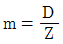
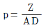
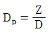
- Do=m(Z+2)
(정답률: 37%)
34. 스프링의 변형±(mm)은 탄성한도 내에서 하중P(kgf) 및 스프링상수k(kgf/mm)와는 어떠한 관계가 있는가?
- 하중에 비례하고 상수에 반비례한다.
- 하중에 반비례하고 상수에 비례한다.
- 하중과 상수에 비례한다.
- 하중과 상수에 반비례한다.
(정답률: 39%)
35. 축에 홈을 파지 않는 키는?
- 페더키이
- 반달키이
- 성크키이
- 새들키이
(정답률: 36%)
36. 롤링베어링과 비교하여 미끄럼 베어링의 특성을 설명한 내용 중 거리가 가장 먼 것은?
- 윤활에 주의를 요하며 윤활장치가 필요하다.
- 규격이 없으므로 호환성이 없고 일반적으로 주문생산이다.
- 일반적으로 저렴하다.
- 저속회전에 적당하나, 고속회전에는 부적당하다.
(정답률: 36%)
37. 극한강도(failure stress)를 σf, 허용응력(allowable stress)을 σa, 안전율(safety factor)을 Sf라고 할 때, 옳은 관계식은?
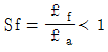
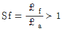
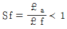
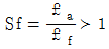
(정답률: 26%)
38. 올덤 커플링(oldham coupling)은 다음 어느 경우에 사용되는가?
- 2축의 거리가 멀고, 2축이 평행한 경우
- 2축의 거리가 가깝고, 2축이 평행한 경우
- 2축의 거리가 멀고, 2축이 교차한 경우
- 2축의 거리가 가깝고, 2축이 교차한 경우
(정답률: 48%)
39. 다음은 기어 전동 장치에 대한 설명이다. 옳은 것은?
- 서로 맞물려 회전하고 있는 두 기어의 모듈(module)은 서로 다르다.
- 인벌류트 치형(involute tooth)의 기어는 시계나 정밀 계측기의 전동 장치에 주로 사용한다.
- 전위 기어를 사용하면 언더컷(undercut)은 방지할 수 있으나, 두 기어의 중심거리 변경이 안된다.
- 웜 기어는 큰 감속비(減速比)를 얻을 수 있으며, 웜 휠(worm wheel)의 역회전을 방지할 수 있다.
(정답률: 44%)
40. 마찰차에 대한 다음의 설명 중 틀린 것은?
- 두개의 마찰차 사이의 마찰력을 이용하여 동력을 전달한다
- 두개의 마찰차는 구름접촉을 하므로 확실한 회전운동의 전달이 가능하다.
- 주어진 범위내에서 연속적으로 변속이 가능하다.
- 전달해야 될 힘이 그다지 크지 않을 때 많이 사용된다.
(정답률: 22%)
3과목: 컴퓨터응용가공
41. 구멍의 치수가
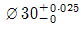
, 축의 치수가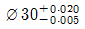
일 때 최대 죔새는 얼마인가?- 0.030
- 0.025
- 0.020
- 0.0⑤
(정답률: 45%)
42. 출도 후 도면 내용을 정정했을 때 틀린 것은?
- 변경한 곳에 적당한 기호( )를 부기한다.
- 변경전의 도형, 치수는 지운다.
- 변경 년월일, 이유 등을 명기한다.
- 변경 전 치수는 한 줄로 긋고 그대로 둔다.
(정답률: 43%)
43. 3차원 기본 형상(primitives)을 이용하여 bool 연산법(합, 차, 적)으로 3차원 모델을 완성하는 기법을 무엇이라고 하는가?
- C.S.G.(Constructive Solid Geometry)법
- B-rep.(Boundary representation)법
- W-rep.(Wire representation)법
- D.B.M(Data Base Management)법
(정답률: 61%)
44. 작도의 시간과 지면의 공간을 절약한다는 관점에서 중심선의 한쪽 도형만 그리고 중심선의 양끝에 짧은 2개의 평행한 가는 선의 도시기호를 그려 넣는 경우는?
- 반복 도형의 생략
- 대칭 도형의 생략
- 중간 부분 도형의 단축
- 2개 면의 교차부분의 둥글 때 도시
(정답률: 59%)
45. 베어링 호칭기호가 6310ZNR 이다. 각부의 뜻을 틀리게 표시한 것은?
- 63 : 베어링 계열 기호
- 10 : 안지름 번호
- Z : 실드 기호
- NR : 틈 기호
(정답률: 44%)
46. 다음 중 색채 디스플레이를 구성하는 3가지 전자빔의 구현색에 해당하지 않는 것은?
- Blue
- Red
- Yellow
- Green
(정답률: 54%)
47. 치수를 나타내는 수치에 부가하여 그 치수의 의미를 명확히 나타내기 위하여 사용하는 치수 보조기호의 설명이 잘못된 것은?
- ø : 지름
- Sø : 작은 지름
 : 호의 길이
: 호의 길이- R : 반지름
(정답률: 60%)
48. 형상 모델에서 원하는 모양과 크기의 모델을 만들기 위하여 꼭 필요한 기본 요소가 아닌 것은?
- 크기
- 분석
- 위치
- 방향
(정답률: 51%)
49. 코일 스프링의 도시방법으로 적합한 것은?
- 모양만을 도시할 때는 스프링의 외형을 가는파선으로 그린다.
- 특별한 단서가 없는 한 모두 왼쪽 감기로 도시한다.
- 중간 부분을 생략할 때는 생략한 부분을 가는 1점쇄선 또는 가는 2점쇄선으로 도시한다.
- 원칙적으로 하중이 걸린 상태에서 도시한다.
(정답률: 35%)
50. 단면의 해칭하는 방법과 가장 관계 없는 사항은?
- 동일한 부품의 단면은 떨어져 있어도 해칭의 각도와 간격은 일정하게 그린다.
- 두께가 얇은 부분의 단면도는 실제치수와 관계 없이 한개의 굵은 실선으로 도시할 수 있다.
- 필요에 따라 해칭하지 않고 스머징할 수 있다.
- 해칭한 곳에는 해칭선을 중단하고 글자, 기호 등을 기입할 수 없다.
(정답률: 40%)
51. 기하 공차의 종류 중 모양 공차에 속하지 않는 기호는?
(정답률: 52%)
52. 직선
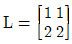
을 Z축을 중심으로 반시계 방향으로 45°만큼 회전시킨 결과는?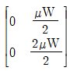
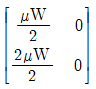
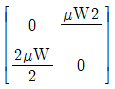
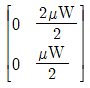
(정답률: 20%)
53. 변환행렬(transformation matrix)이 필요없는 작업은?
- COPY
- MIRROR
- ROTATE
- SCALE
(정답률: 39%)
54. 기계제도에서 주로 사용되는 투상도법은 어느 것인가?
- 투시도
- 사투상도
- 정투상도
- 등각투상도
(정답률: 56%)
55. 다음중 컴퓨터 그래픽 하드웨어 출력장치의 일종인 감열식(thermal) 플로터를 구성하는 부품에 해당되지 않는 것은?
- 액체잉크토너
- 프린터 헤드
- 평면종이
- 왁스형 리본
(정답률: 14%)
56. 다음 중 CPU에 대한 설명으로 옳지 않은 것은?
- 컴퓨터를 사용하기 위해서는 CPU가 없어도 된다.
- CPU는 중앙처리장치라고도 한다.
- CPU는 입력된 자료를 연산하는 기능을 갖고 있다.
- CPU는 연산된 자료를 특정장소에 보내는 기능을 갖고 있다.
(정답률: 68%)
57. 3차원 좌표를 [x,y,z,1]의 row vector로 표기한다. 그림과 같은 좌표계에서 Y축에 대하여 반시계 방향으로 θ만큼 회전시키려할 때 사용할 변환행렬 T(4x4)에서 T(1,3)의 요소는 어느 것인가? [T(1,3)은 첫번째 row의 세번째 요소를 의미한다.]
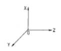
- T(1,3) = sinθ
- T(1,3) = cosθ
- T(1,3) = -sinθ
- T(1,3) = -cosθ
(정답률: 36%)
58. 양궁 과녁과 같이 동심원으로 구성되는 형상을 만들려고한다. 다음 중 가장 적절하게 사용될 수 있는 기능은?
- zoom
- move
- offset
- trim
(정답률: 56%)
59. Bezier 곡선방정식의 특성으로서 적당하지 않은 것은?
- 생성되는 곡선은 다각형의 시작점과 끝점을 반드시 통과해야 한다.
- 다각형의 첫째 선분은 시작점의 접선벡터와 같은방향이고, 마지막 선분은 끝점의 접선벡터와 같은 방향이다.
- 다각형의 꼭지점의 순서를 거꾸로 하여 곡선을 생성하여도 같은 곡선을 생성하여야 한다.
- 곡선의 양 끝점에서는 Co 연속성을 만족하여야 하며 두개의 꼭지점에 의해 결정되어야 한다.
(정답률: 38%)
60. 나사의 종류를 표시하는 기호이다. ISO규격의 관용 평행나사를 나타내는 기호는?
- M
- R
- G
- E
(정답률: 35%)
4과목: 기계제도 및 CNC공작법
61. 다음과 같은 CNC 선반의 좌표어에서 X축 및 X방향 좌표어로만 구성된 것은?
- +X, U, I, W
- +Z, W, K, U
- -Z, W, K, X
- -X, U, I, X
(정답률: 35%)
62. 공학적 해석(부피, 무게중심, 관성모멘트 등의 계산)을 적용할 때 쓰는 적합한 모델은?
- 솔리드 모델
- 서피스 모델
- 와이어프레임 모델
- 데이터 모델
(정답률: 67%)
63. 보링 사이클 가공 기능으로 바르게 짝지워진 것은?
- G74, G76, G80, G81
- G80, G81, G84, G85
- G83, G84, G85, G86
- G86, G87, G88, G89
(정답률: 24%)
64. 절점(knots)의 갯수가 9이고 차수(degree)가 4인 임의의 B-스플라인곡선의 조정점(control point)의 갯수는 몇개인가?
- 3
- 4
- 5
- 6
(정답률: 45%)
65. 다음 CNC선반 프로그램에서 [ ]안에 가장 적합한 것은?
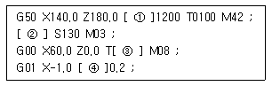
- S, G97, 0101, E
- S, G97, 0101, G
- F, G97, 0100, S
- S, G96, 0101, F
(정답률: 65%)
66. 3차원 솔리드모델에서 사용되는 프리미티브(primitive)라고 할 수 없는 것은?
- cone
- box
- sphere
- point
(정답률: 63%)
67. 일반적으로 CNC 공작기계에서 백래시(back lash)의 오차를 줄이기 위해 사용하는 기구는?
- 리드 스크루(lead screw)
- 리졸버(resolver)
- 볼 스크루(ball screw)
- 서보기구(servo unit)
(정답률: 57%)
68. CNC공작기계의 구성에서 사람의 두뇌에 해당되는 것은?
- 서보기구
- 볼 나사
- 제어부
- 위치검출기
(정답률: 66%)
69. CAD/CAM 시스템을 구축하여 얻는 잇점으로 옳지 않은 것은?
- 제품의 품질 향상과 안정화
- 설계 기간의 연장
- 설계와 생산의 표준화
- 도면 변경, 검색의 용이
(정답률: 66%)
70. Serial data 전송시 전송되는 data의 구성 내용이 아닌 것은?
- start bit
- parity bit
- stop bit
- check bit
(정답률: 22%)
71. 다음 그림과 같이 ①에서 ②로 가공하고자 할 때 잘못된 프로그램은?
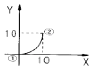
- G17 G90 G03 X10. Y10. R10. F200 ;
- G17 G91 G03 X10. Y10. R10. F200 ;
- G17 G91 G03 X10. Y10. I10. F200 ;
- G17 G91 G03 X10. Y10. J10. F200 ;
(정답률: 37%)
72. 솔리드 모델링(solid modelling) 방법의 특징으로 옳은 것은?
- 물리적 성질의 계산이 불가능하다.
- CSG(Constructive Solid Geometry)에서는 모델→면 →모서리선 →꼭지점식으로 데이터 구조를 계층구조로 표현한다.
- 경계 표현 방법(Boundary Representation)에서는 기본적인 프리미티브의 합, 차, 곱 등의 연산으로 솔리드모델을 구성한다.
- 형상처리시 모든 정보가 채워져 있어 연산에 시간이 걸린다.
(정답률: 29%)
73. CNC 공작기계의 작업안전에 관한 사항으로 틀린 것은?
- 편집모드에서 프로그램을 확인하고 자동운전을 실행한다.
- 강전반 및 CNC 장치는 어떠한 충격도 가하지 말아야 한다.
- 자동운전을 실행하기 전에 커서를 프로그램 선두로 복귀시킨다.
- 이상한 공구경로나 위험한 상황이 발생하면 자동정지(Feed Hold) 버튼을 누른다.
(정답률: 36%)
74. 복합형 나사절삭 사이클인 G76에서 다음과 같이 지령되었을 때 (A),(B)에서 밑줄 친 D와 Q가 의미하는 것은?
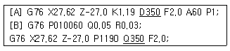
- 나사산의 높이
- 면취량
- 첫번째 절입깊이
- 나사의 끝점
(정답률: 55%)
75. 그림에서 rc의 곡면을 반경 R인 필렛 엔드밀(fillet endmill)로 가공하려고 한다. 이 엔드밀의 CL(Cutter Location) 데이터 rL을 구하는 공식은? (단, 』=n∙u 이고, fillet 반경은 a이다.)
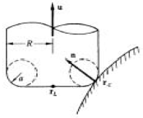
- rL=rc+a(n-u)+(R-a)(n-』u)/

- rL=rc+a(n-u)+(R+a)(n+』u)/

- rL=rc-a(n-u)+(R-a)(n+』u)/

- rL=rc-a(n-u)+(R+a)(n-』u)/

(정답률: 18%)
76. 갑작스런 충격에 공구가 깨지지 않기 위해서는 파손강도(rupture strength)가 높아야 하는데, 파손강도의 순서가 올바른 것은?
- 고속도강＞다이아몬드＞세라믹＞초경
- 다이아몬드＞세라믹＞초경＞고속도강
- 고속도강＞초경＞다이아몬드＞세라믹
- 다이아몬드＞세라믹＞고속도강＞초경
(정답률: 35%)
77. 곡면을 모델링하는 여러 방법들 중에서 평면도, 정면도, 측면도상에 나타난 곡면의 경계곡선들로 부터 비례적인 관계를 이용하여 곡면을 모델링(modelling)하는 방법은?
- 점 데이터에 의한 방식
- 쿤스(coons)방식
- 비례 전개법에 의한 방식
- 스윕(sweep)에 의한 방식
(정답률: 50%)
78. 서피스 모델링(surface modeling)에서 곡면을 절단하게 되는 경우 나타나는 요소는 무엇인가?
- 선(line)
- 면(plane)
- 곡면(surface)
- 곡선(curve)
(정답률: 56%)
79. 머시닝 센터의 공작물 좌표계를 설정하는 G코드가 아닌 것은?
- G57
- G58
- G59
- G60
(정답률: 67%)
80. 일반적인 CNC공작기계에서 제품가공 흐름도로 가장 적합한 것은?
- 프로그램작성 → 도면 → 가공계획 → 기계가공 → 제품
- 도면 → 가공계획 → 프로그램작성 → 기계가공 → 제품
- 제품 → 도면 → 기계가공 → 가공계획 → 프로그램 작성
- 도면 → 프로그램작성 → 가공계획 → 기계가공 → 제품
(정답률: 55%)